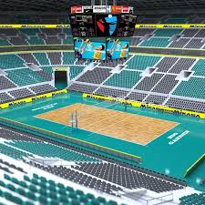

Desde que empezé a jugar el voleibol en tercero de secundaria me he encontrado muy apasionado por el deporte eso me ha llevado a empezar a jugar seriament5e y con el objetivo mínimo de llegar a ganar algun interprepa/intercbtis. Tambien me he divertido bastante jugandolo, aprendiendo como hacer saques, recepciones, voleo y remates.
Esto me ha llevado a aprender bastante de mi errores y de los que tengo por montones actualmente a buscar tutoriales, entrenadores, entrenar con amigos, etc. Aunque es bastante deshalentador el voleibol debido a que existe mucha gente que se burla de algún error, aunque para ellos puede ser una simple broma puede que alguno si te afecte a mayor o menor medida. (sobre todo si la otra persona es mas bueno que tú). Gracias a esto tengo varios consejos que darles a ustedes, hagan click en el enlace para ello :D 🔹Consejos y preguntas frecuentes
MISIÓN: Mi meta a alcanzar es llegar a ganar un intercbtis con entrenamiento de un equipo formal, aspirar a ser el mejor de Jalisco y tal vez en el futuro el mejor de México.
VISIÓN: Dentro de un año me veo dentro de la selección de los intercbtis. Dentro de unos 5 años me veo jugando dentro de un equipo semi-profesional.
POLÍTICA DE CALIDAD: Espero jugar con un equipo semi-profesional viajando a varias ciudades para avanzar profesional y personalmente, tener algun sponsor y pasarmelo genial con otras personas :D